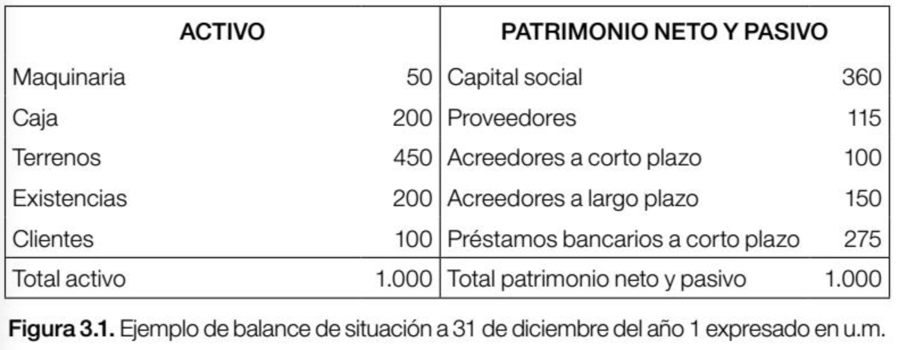

Economía de la empresa
Entrando en contexto
Un ingreso es el incremento de los activos o el decremento de los pasivos de una entidad, durante un periodo contable, con un impacto favorable en la utilidad o pérdida neta o, en su caso, en el cambio neto en el patrimonio contable y, consecuentemente, en el capital ganado o patrimonio contable, respectivamente.
El costo y el gasto son decrementos de los activos o incrementos de los pasivos de una entidad, durante un periodo contable, con la intención de generar ingresos y con un impacto desfavorable en la utilidad o pérdida neta o, en su caso, en el cambio neto en el patrimonio contable y, consecuentemente, en su capital ganado o patrimonio contable respectivamente.
La amortización (o depreciación) es el desgaste que han sufrido en un ejercicio aquellos elementos que son propiedad de la empresa (maquinaria, edificio, ordenadores, etc) y que están mas de un año en la misma. El desgaste puede deberse al uso del bien o al paso del tiempo ya que el bien se vuelve obsoleto.
La cuenta de perdidas y ganancias, que también recibe la denominación de cuenta de resultados (o estado de resultados) tiene normalmente el siguiente formato:
- Ventas netas: ingresos obtenidos por la empresa durante el ejercicio, menos los descuentos aplicados y sin contar el IVA (impuesto sobre el valor añadido) repercutido a los clientes.
- Materiales consumidos: valor del consumo de materiales.
- Otros ingresos de explotación: subvenciones recibidas para cubrir determinados gastos, los ingresos obtenidos por el alquiler de alguna propiedad de la empresa.
- Gastos de personal: los salarios pagados y los pagos de la seguridad social.
- Otros gastos de explotación: tributos, gastos de arrendamientos, transportes, prima de seguros, etc.
- Amortizaciones: será la suma de las cuotas de amortización de los elementos que son susceptibles de desgaste por el paso del tiempo o por el uso.
- Gastos e ingresos financieros: incluye los gastos por interese pagados a los bancos u otras entidades financieras, así como los ingresos por intereses de inversiones realizadas por la empresa.
- Impuesto de sociedades: es el impuesto que grava el beneficio obtenido por la empresa.
Ejemplo real de una cuenta de resultados
Importancia de la gestión de la tesorería de la empresa
La generación de beneficio es muy importante para retribuir adecuadamente a los accionistas que han invertido su dinero en la empresa. La caja es el efectivo (beneficio líquido) que tiene la empresa disponible para hacer frente a diversos pagos (proveedores de materias primas, impuestos, acreedores por la compra de maquinaria, devolución de préstamos,etc.).
Desde una perspectiva economico-financiera la importancia de la gestión de la caja se debe a que el éxito de una empresa se mide en relación a la generación de los beneficios y a la tesorería (o caja) que es capaz de generar.
Flujo de Caja de la empresa
Al dinero que genera la empresa a través de sus actividades de explotación (actividades relacionadas con la actividad principal de la empresa) se le denomina flujo de caja (cash flow). El flujo de caja puede calcularse de varias formas:
- Flujo de caja financiero: se obtiene por diferencia entre los cobros de explotación (cobros de las ventas) y los pagos de explotación (pagos de materias primas, salarios, seguros sociales, etc.)
- Flujo de caja económico: se obtiene sumando al beneficio neto aquellos gastos que no se pagan, como por ejemplo, las amortizaciones, ya que son un gasto que no representa una salida de tesorería.
El flujo de caja financiero y el economico normalmente no coinciden salvo que la empresa cobre todas sus ventas y pague todas sus deudas de explotación al contado.
Flujo de Efectivo
Es un estado contable que informa del saldo y de las variaciones de tesorería, clasificando los movimientos por tipo de actividades, con lo que aporta una información muy útil para la gestión de tesorería de la empresa. Permite mostrar la capacidad de generar efectivo que tiene la empresa.
- Actividades de explotación (o actividades ordinarias)
- Actividades de inversión: actividades relacionadas con la compra o venta de elementos (maquinaria, edificios, ordenadores, inversiones financieras, etc.) y que están más de un año en la empresa.
- Actividades de financiación: actividades relacionadas con las aportaciones de capital de los accionistas o con la financiación externa conseguida por la empresa (obtención o devolución de préstamos)
Balance general
Es un estado contable que recoje los bienes, derechos y obligaciones de una empresa, así como las aportaciones de los socios. Es un documento que informa de la situacion patrimonial de la empresa. El mísmo consta de tres partes:
- Activo: bienes y derechos.
- Pasívo: deudas con terceros que pueden ser a corto plazo o a largo plazo.
- Patrimonio neto: es la diferencia entre el activo y el pasívo. Incluye las aportaciones de los socios entre otros conceptos.
Ejemplo de un balange general de una empresa

Criterios de ordenación del balance general
- Para el ACTIVO: La liquidez mide la facilidad que tienen los diferentes elementos para convertirse en dinero.
- Para el PASIVO y PN: las partidas que aparecen en el patrimonio neto y pasivo se ordenarán de menor a mayor exigibilidad (siendo el capital social la de menor exigibilidad)
Análisis patrimonial y financiero
El análisis patrimonial y financiero se realiza a partir del análisis del balance de situación. Permite obtener un diagnostico de la situación patrimonial (endeudamiento y capitalización) y financiera (solvencia a corto plazo, gestión de plazos de cobro y pago y gestión de activos) de la empresa.
Endeudamiento
La empresa tiene dos opciones para financiarse: financiación propia o agena. Para analizar la deuda se debe tener en cuenta el nivel de deuda y la calidad de la misma. El endeudamiento representa el porcentaje de fondos de participación de los acreedores, ya sea en el corto o largo plazo, en los activos. En este caso, el objetivo es medir el nivel global de endeudamiento o proporción de fondos aportados por los acreedores.
Ratios utilizados en la empresa
Sirven para determinar la magnitud y dirección de los cambios sufridos en la empresa durante un periodo de tiempo. Fundamentalmente los ratios están divididos en 4 grandes grupos:
- Índices de liquidez. Evalúan la capacidad de la empresa para atender sus compromisos de corto plazo.
- Índices de Gestión o actividad. Miden la utilización del activo y comparan la cifra de ventas con el activo total, el inmovilizado material, el activo circulante o elementos que los integren.
- Índices de Solvencia, endeudamiento o apalancamiento. Ratios que relacionan recursos y compromisos.
- Índices de Rentabilidad. Miden la capacidad de la empresa para generar riqueza (rentabilidad económica y financiera).
Solvencia a corto plazo
Expresa el respaldo que posee la empresa frente a sus deudas totales. Dan una idea de la autonomía financiera de la misma. Mide la disponibilidad monetaria de una empresa para hacer frente a sus obligaciones de pago en el corto plazo.
Gestión de cobros y pagos
La política de la empresa en relación a la gestión de pagos y cobros es muy importante. Cobrar antes de los clientes implica disponer de unos fondos que permitirán hacer frente a las deudas a corto plazo y pagar más tarde a los proveedores implica disponer de una financiación.
Ciclo de maduración y ciclo de caja
- El ciclo de maduración es el tiempo que pasa desde que se compra la materia prima hasta que se cobra de los clientes.
- El ciclo de caja se obtiene al restar del ciclo de maduración el plazo de pago a proveedores ya que dicho plazo es la financiación automática que se obtiene de ellos.
Ejemplo de ejercicio
Punto de equilibrio de una empresa
Cuando una empresa utiliza el sistema de costes variables puede calcular su punto de equilibrio (punto muerto o umbral de rentabilidad). El punto de equilibrio es la cifra de ventas que permite cubrir todos los costes de la empresa. Para su cálculo se dividen los costes de la empresa entre fijos y variables y se utiliza la siguiente formula:
Importancia del punto de equilibrio
Es una herramienta estratégica clave a la hora de determinar la solvencia de un negocio y su nivel de rentabilidad. La determinación del punto de equilibrio:
- Permite comprobar la viabilidad del negocio: si hay constancia en el ritmo de los ingresos también lo habrá en el rango o momento en que se alcanzará el punto de equilibrio.
- Permite conocer el nivel de beneficios: una vez alcanzado el punto de equilibrio, no todo lo que se venda es utilidad neta.
- Es una herramienta útil para presentar información, para explicar la dinámica de una unidad de producción, para señalar los rasgos esenciales del sistema de volumen, costo e ingresos, y para establecer unos objetivos mínimos de ventas.
Ejemplo de punto de equilibrio
El punto de equilibrio se produce al nivel de las 750 unidades, que supone unos ingresos de $150.000. Recuerde que del gráfico se desprende que las 750 unidades darán como resultado un margen de contribución total de $60.000, que iguala exactamente el costo fijo.
Bibliografía
- Soriano, M. and Amat, O. (2011). Introducción a la contabilidad y las finanzas. Barcelona: Profit.
- Ibarra, A. Felgueras, M. C. Hecker, E. Sánchez, F. Kulfas, M. (2002). Guia de costos industriales. Secretaría de Desarrollo Económico - GCBA
- Guzmán, C. (2018). Ratios financieros para el análisis de estados financieros - GestioPolis - Conocimiento en Negocios. Recuperado de: Ratios Financieros
- Moreno, M. (2018). El Punto de Equilibrio del negocio y su importancia estratégica. Recuperado de: El Punto de Equilibrio